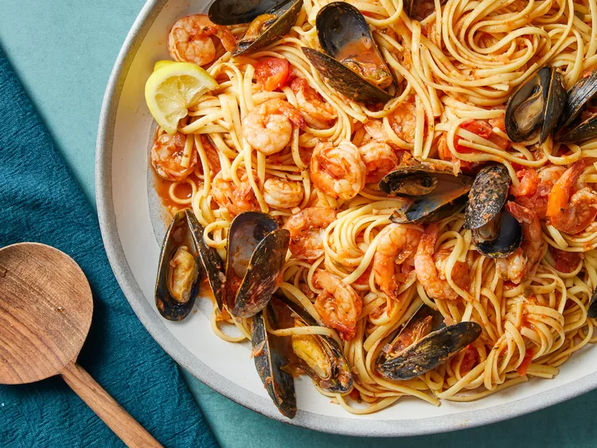

Cooking pasta is a science. To achieve the perfect "bite," one must use plenty of salted water — "as salty as the sea."
A simple harmony of San Marzano tomatoes, garlic, and high-quality olive oil. Let the ingredients speak — no shortcuts, no sugar.
A test of technique. Combine pasta water, Pecorino Romano, and toasted black pepper to create a creamy sauce — without a single drop of cream.
Learn the "Well Method": flour shaped into a volcano holds fresh eggs before being kneaded into a smooth, elastic dough — the soul of Italian cooking.

Mastering pasta is an art that combines science, tradition, and intuition. The perfect al dente texture, the right sauce consistency, and the harmonious balance of flavors come from understanding the fundamentals while allowing creativity to flourish. Whether you're following a classic recipe or creating your own variation, remember that the best pasta dishes are made with patience, quality ingredients, and a generous amount of love. Your culinary journey has just begun—keep experimenting and savoring every bite.